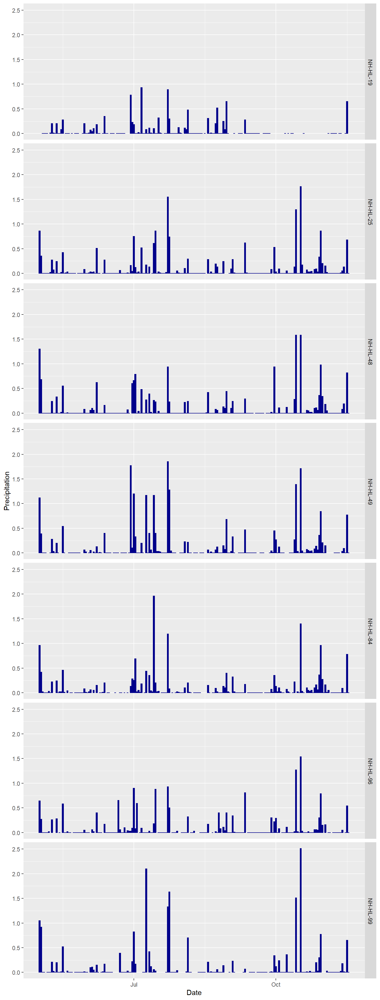
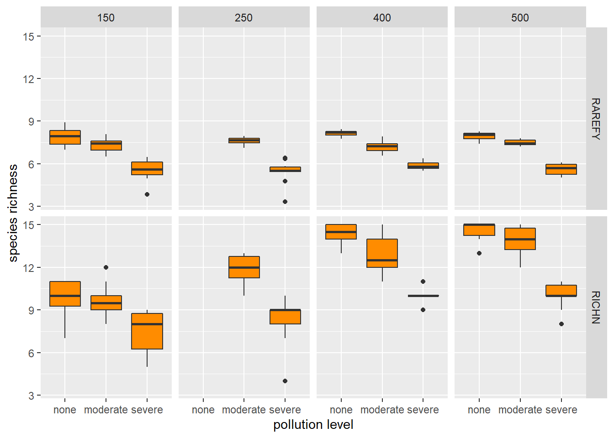

8 Stream Diversity
Date: 9/23/2020
Download the project folder here.
Learning Objectives
After completing this lab you should
- understand the relationship of sampling effort and accuracy of estimates.
- be able to use
veganto calculate a range of diversity indices. - be able to use
ggplotto create box plots. - understand the concept of ecological indicators/bioindicators.
- understand how aquatic invertebrates can be used to monitor degrees of pollution in aquatic habitats.
Before we start
To be able to calculate various species diversity for each sample, we are going to need to install a new library for these calculations (you only need to do this once).
Now we can load that library1 Remember, if you restart Rstudio, reload the Rproject, or start a new R session in any other way you need to re-run the two code chunks above to make sure you libraries are loaded..
8.1 Stream Diversity Simulator
Open the simulator.
When you open the simulator, you will be able to see a section of a stream (blue rectangle). Click on the blue Go button in the top right and the stream will begin to flow. Clicking on Go again, will stop the flow, and Reset will clear the simulation.
At the bottom of the window are three more blue buttons to open the seine (net for catching inverts), close the seine, and release any aquatic invertebrates caught during sampling. Once you open the seine while the stream is running inverts caught will be sorted into the sixteen sampling/sorting buckets below the stream. Underneath those, there are yellow counters for each of the sixteen species in the model which will indicate how many individuals of each species have been caught.
To the right there are three larger counters that will count the total number of species, total catch, and sampling time. You can determine the sampling time using the green slider at the bottom left of your window.
You can adjust the speed of the model using the slider at the very beginning of the screen. To make sure we gather our data correctly, each sample will be taken following these five steps2 Make sure you always reset the model to clear the previous sample!.
- Click
Reset. - Set/check the sampling time.
- Click
Open Seine(will close automatically after set time). - Click
Goto run the simulation. - After the seine has close, click
Goto stop simulation.
8.2 Determining sampling effort
Sampling methods & effort are an important component of designing a field study estimating species assemblage. It is important that methods are consistent to be able to compare data within one study and among studies.
We will start by running a series of simulations to determine how sampling effort affects the number of different species and the total number of individuals caught.
The central question we want to answer is how long must we sample to ensure that we get a representative sample and avoid sampling error. In the real world, we would be attempting to balance this with trying to avoid putting in more effort than necessary and removing as few organisms as necessary (and being less disruptive to the system).
8.2.1 Gather your data
We will split the simulation runs among the students in the class. Each of you will generate your own data but we will combine them for better sampling sizes.
We have three different levels of pollution, you will set your pollution level depending on your row in the class room:
- Row 1: none
- Row 2: moderate
- Row 3: severe
Now, run the model for a range of values from 0 - 500 (see excel spreadsheet in the data folder for specific values). You are only recording the total species and total catch3 Once you reach higher sampling times, consider adjusting the speed slider at the top of the screen for quicker sampling.. Make sure to reset the model after each run.
After you have completed your sampling upload your data to the shared google spreadsheet.
Once everyone has completed their data collection, cut and paste the complete data set from the google spreadsheet and save it as a tab-delimited file (sampling_effort.txt) in the data-folder.
8.2.2 Analyze results
Let’s start by reading in our results.
► Question 8.1
Describe the expected relationship for of the number of individuals caught with increasing sampling effort.
Let’s plot our data; we will also learn how to use the function ggsave() to export our figure.
# plot data
ggplot(effort, aes(x = TIME, y = N_INDV)) +
stat_smooth(method = "loess") +
facet_grid(POLLUTION ~ .) +
geom_point(shape = 21, size = 2, color = "black", fill = "gold") +
labs(x = "sampling effort", y = "number of individuals")Figure 8.1: Number of individuals (yellow points) caught per sampling effort. The blue line indicates the predicted relationship using local polynomial regression fitting. The grey area is the 95% confidence interval.

# save last plot as png in results folder
ggsave(plot = last_plot(),
filename = "results/sampling_effort_none.png",
dpi = 300, units = "cm",
width = 10, height = 30)Another way to export a figure from Rstudio is to click the Export button in the Plots panel and select Save as Image, in the pop-up window you can use the Directory button to select your results directory and then name the file. You can use the Width and Height windows to determine the dimensions of your figure. Selecting Update Preview will allow you to see what that figure would look like.
► Question 8.2
Briefly describe your results by comparing differences among the varying levels of pollution.
Next, let’s look at the number of species caught in each sample.
► Question 8.3
Describe the expected relationship for of the number of species caught with increasing sampling effort. Then plot your data as a scatterplot to see if you are correct.
# plot data
ggplot(effort, aes(x = TIME, y = N_SPECIES)) +
stat_smooth(method = "loess") +
geom_point(shape = 21, size = 2, color = "black", fill = "darkorange") +
labs(x = "sampling effort", y = "number of individuals")Figure 8.2: Number of species (yellow points) caught per sampling effort. The blue line indicates the predicted relationship using local polynomial regression fitting. The grey area is the 95% confidence interval.
► Question 8.4
Briefly describe your results by comparing differences among the varying levels of pollution.
Finally, let’s use our results to design our sampling scheme.
► Question 8.5
Given this information, briefly discuss how you would design your sampling scheme to compare species assemblages amoung streams with varying levels of pollution.
Note
8.3 Comparing abundance, species richness and species diversity of stream with varying degrees of pollution
8.3.1 Data Collection
Again, we will split the data collection across the class. Each of you will run ten replicates for one of the three levels of pollution (none, moderate, severe) for a set sampling time based on our seating plan.
Pollution level:
- Row 1: none
- Row 2: moderate
- Row 3: severe
Sampling Time
- Column 1: 150
- Column 2: 250
- Column 3: 400
- Column 4: 500
Use the excel spreadsheet in the data directory to record the sampling time, pollution level and the abundance of each sampled species for each replicate. Make sure to number of samples 1 through 10.
Once you are done with your sampling be sure to upload your data to the shared google spreadsheet.
8.3.2 Data Analysis
Once all the data has been added to the google spreadsheet, cut and paste it into a excel spreadsheet and save it as a tab-delimited file (pollut_comp.txt) in your data sub-directory.
Then we can read the data into Rstudio for analysis.
The data set is in a wide format, i.e. the observed number of individuals per species are each in their own column.
For efficient analysis and visualization in using functions you have become familiar with over the last few weeks in the tidyverse and ggplot packages we need to convert it to a tidy data set where each row is an observation.
Do you remember what function we use to do that? What would that code look like?
Solution
Now that our data is formatted as a tidy data set we can start to look at our data.
► Question 8.6
Consider which parameters we can compare to understand differences in species diversity among streams with no, moderate, and severe levels of parameters. For each parameter briefly describe what you are measuring and discuss the patterns you expect to see. You may use bullet points.
Hint
Let’s start with the total number of individuals caught for each sampling effort.
What tidyverse functions we are familiar with can we use to calculate the total number of individuals caught for each sampling effort?
► Solution
We have multiple measurements for each sample, so we are interested in comparing the distribution of values.
One way to visualize distributions is box plots (also known as box and whiskers plots).
# plot boxplots
ggplot(total, aes(x = POLLUTION, y = N_TOTAL)) +
geom_boxplot(fill = "darkorange") +
facet_grid(. ~ TIME) +
labs(x = "pollution level", y = "total catch")
Figure 8.3: Distribution of total of individuals caught for different levels of pollution and sampling effort.
Tukey boxplots as visualized by ggplot() contain the following information.
The box shows the interquartile range (IQR), the top and bottom are the 25th and 75th quartile, the center line is the 50th percentile (median).
The upper whisker is Q3 + 1.5 * IQR while the lower whisker is Q_1 - 1.5 * IQR.
The dots (if present) are outliers of the distrubtion, here a data point is classified as an outlier of it is < Q1 - 1.5 * IQR or > Q3 + 1.5 * IQR.
![Distribution of total of individuals caught for different levels of pollution and sampling effort.
Tukey boxplots as visualized by `ggplot()` contain the following information.
The box shows the interquartile range (IQR), the top and bottom are the 25th and 75th quartile, the center line is the 50th percentile (median).
The upper whisker is Q3 + 1.5 * IQR while the lower whisker is Q_1 - 1.5 * IQR.
The dots (if present) are outliers of the distrubtion, here a data point is classified as an outlier of it is < Q1 - 1.5 * IQR or > Q3 + 1.5 * IQR.](_main_files/figure-html/unnamed-chunk-11-1.png)
► Question 8.7
Discuss your results. Remember, discuss means that you should both briefly describe and interpret them.
Next, let’s compare the total number of species caught per sampling effort.
Previously, we’ve used tidyverse functions to determine the number of species. Today, we are going to make use of the fact that the package vegan has built-in functions to calculate a range of diversity measures.
Similar to what we’ve done previously, we’ll use group_by() and summarize() to calculate these statistics for each sample, but this time we will apply specialized functions to calcualte the statistics.
The most straightforward way to calculate species richness is to just determine the number of species occurring in a sample. This can be done using vegan::specnumber().
One thing we have not yet considered is that we standardized our sampling effort by seining for the same amount of time to make sure that we catch all species present in the stream. But from our comparison above, we know that this has resulted in very different numbers of individuals caught. One way to adjust for differences in sample size is called rarefaction which means that for every sample a set number of individuals are drawn and then the number of species is counted, i.e. larger samples are randomly sub-sampled to the same level as smaller samples. As a result every sample is the same size and comparable. We can do this using the function vegan::rarefy().
Frequently the smallest sample size is used - we can determine this number from the data frame we just generated.
Now, we can calculate species richness using rarefaction and without to determine differences between these measures.
# calculate richness
richn <- tidy %>%
group_by(POLLUTION, TIME, SAMPLE) %>%
summarize(RICHN = specnumber(N_INDV),
RAREFY = rarefy(N_INDV, min_size)) %>%
ungroup()Let’s visualize our results to determine differences among pollution levels and related to sampling effort.
Instead of creating individuals plots, we are going to convert our data into a tidy data set. That way we can use facet_grid() to plot TIME in the columns as we have been doing previously but in addition we can plot RICHNESS in rows.
# format data
richn <- richn %>%
pivot_longer(4:5, names_to = "RICHNESS", values_to = "VALUES")
# plot data
ggplot(richn, aes(x = POLLUTION, y = VALUES)) +
geom_boxplot(fill = "darkorange") +
facet_grid(RICHNESS ~ TIME) +
labs(x = "pollution level", y = "species richness")Figure 8.4: Distribution species richness for different levels of pollution and sampling effort.
► Question 8.8
Discuss your results.
Of course, species richness is problematic for reasons other than sample size so let’s take a look at species diversity as well.
► Question 8.9
Explain the difference between how species richness and species diversity are calculated and briefly discuss the advantages of using species diversity instead of abundance specificially for our experiment comparing diversity of aquatic invertebrates in streams with varying levels of pollution.
We are going to use three different measures of diversity using the function vegan::diversity(). Each measure varies slightly in how it is calculated and should be interpreted, differences come down to whether/how they have been standardized and the emphasis is put on rare species. Overall, each is a measure of evenness, i.e. the larger the number, the higher the diversity which means abundances are more similar across observed species.
- Shannon diversity: this can be interpreted as how difficult it is to predict the identity of a randomly chosen individual.
- Simpson diversity: this is the probability that two randomly chosen individuals are the same species; this measure is more sensitive to rare species.
- Inverse Simpson: an easy way to interpret this is to interpret this number as the number of species in an idealized community where all species are equally abundant.
# calculate diversity stats
diversity <- tidy %>%
group_by(POLLUTION, TIME, SAMPLE) %>%
summarize(SHANNON = diversity(N_INDV, index = "shannon"),
SIMPSON = diversity(N_INDV, index = "simpson"),
INVSIMPSON = diversity(N_INDV, index = "invsimpson"))Now we can compare our data.
Similar to the way we modified the richness data set, we are going to convert our data into a tidy data set, so we can use facet_grid() to plot TIME in the columns as we have been doing previously but in addition we can plot DIVERSITY in rows.
# format data for plotting
diversity <- diversity %>%
pivot_longer(cols = 4:6, names_to = "DIVERSITY", values_to = "VALUE")
# plot data
ggplot(diversity, aes(x = POLLUTION, y = VALUE)) +
geom_boxplot(fill = "darkorange") +
facet_grid(DIVERSITY ~ TIME, scales = "free") +
labs(x = "pollution level", y = "diversity")Figure 8.5: Comparison of species diversity using three different measures for different levels of pollution and sampling time.

► Question 8.10
Discuss your results.
We now have a pretty good idea of how stream diversity compares overall and how sampling effort (or most specifically a lack thereof) may bias our results - but the question that remains open is whether or not we have species-specific effects, i.e. we could have just an overall reduction in the number of species present due to less individuals being caught (i.e. essentially a sampling effect) or we might have some species that are more or less sensitive to pollution resulting in them being more abundant under certain conditions and less so under others or the sample overall may be dominated by one or another species depending on the pollution level..
► Question 8.11
Briefly consider how you would expect your figure to differ for each of those two scenarios.
Let’s visualize our results.
# plot number of individuals per species
ggplot(tidy, aes(x = SPECIES, y = N_INDV, fill = POLLUTION)) +
geom_boxplot() +
facet_grid(TIME ~ ., scales = "free") +
scale_fill_manual(values = c("gold", "darkorange", "red")) +
labs(x = "species", y = "number of individuals") +
theme(axis.text.x = element_text(angle = 90, vjust = 0.5, hjust=1),
legend.position = "bottom")Figure 8.6: Number of individuals per species at varying degrees of pollution.

► Question 8.12
Discuss your results and argue whether differences you are seeing are the result of sampling effects or if there are species-specific effects due to different levels of pollution. Refer to your answer to the question above.
8.4 Ecological Indicators and Bioindicators
► Question 8.13
In our discussion of the strategic value of species diversity, we briefly touched on the concept of indicator species. Briefly outline what an indicator species is and how it differs from a flagship and an umbrella species, two groups that also carry significant stratgic value for conservation efforts. Use specific examples as needed and consider whether a species could fall into all three categories.
Ecological indicators are used as proxies to identify and communicate the impact of human activities on ecosystem to policy-makers. Effective indicators share certain characteristics that allow us to monitor change.
Overall they must be …
- sensitive enough to detect important changes but not too sensitive to avoid picking up natural variation. This means they need to be able to detect changes at the appropriate temporal & spatial scale without being overwhelmed by variability.
- based on well understood & generally accepted conceptual models of the system to which they are applied.
- based on reliable data that is available to assess trends/collected in straightforward process and for which monitoring systems are in place.
- easily understood by policy-makers.
► Question 8.14
Based on these characteristics, argue whether you think aquatic invertebrates could be an effective ecological indicator. Your answer should explicitely state which ecosystem(s) they could be applied to and what change in the ecosystem they could be used to monitor.
Bioindicators are a subset of ecological indicators. Here, species assemblage and population abundance are used to measure ecosystem health and habitat quality. Frequently, they are used as a proxy for environmental contamination and pollution. Aquatic invertebrates are frequently used as bioindicators to assess the level of pollution of streams or other freshwater habitats due to their varying degree of sensitivity to a polluted environment4 yes, this essentially is the answer to the question above, but you should be arguing your answer based on the four characteristics of ecological indicators..
► Question 8.15
Congratulations, you were just hired to develop a project to monitor and compare levels of pollution across a range of freshwater habitats! Use all the the concepts you have learned during this lab regarding experimental design and the sensitivity of aquative invertebrates to pollution to design a monitoring plan. Be specific about your experimental design (sampling effort, replicates) and how you would intepret results, i.e. create a key of pollution sensitive, less-sensitive, and tolerant species that you and your colleagues could use to evaluate streams (explain how/why you are categorizing them that way). Argue the benefits of using this type of monitoring plan over directly measuring pollution.
Some additional help
Page built: 2020-10-28